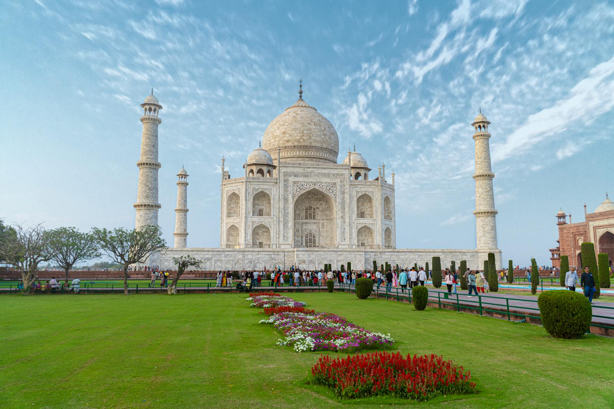
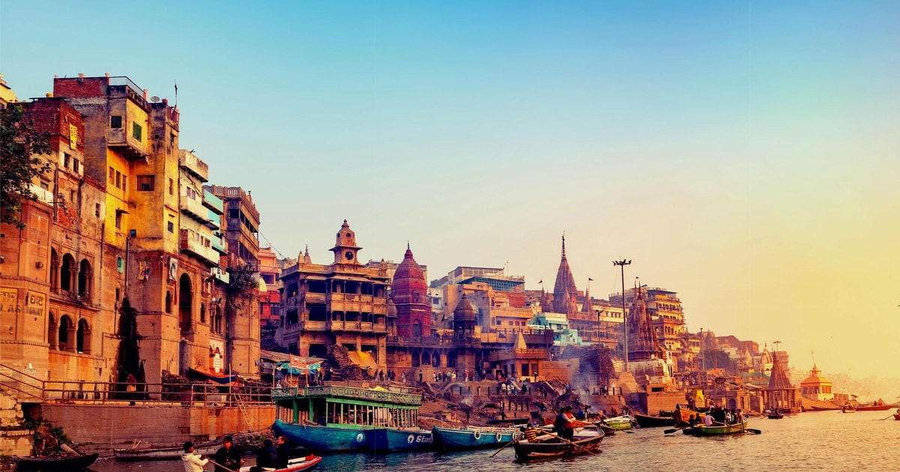
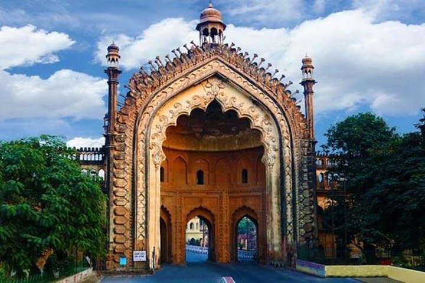
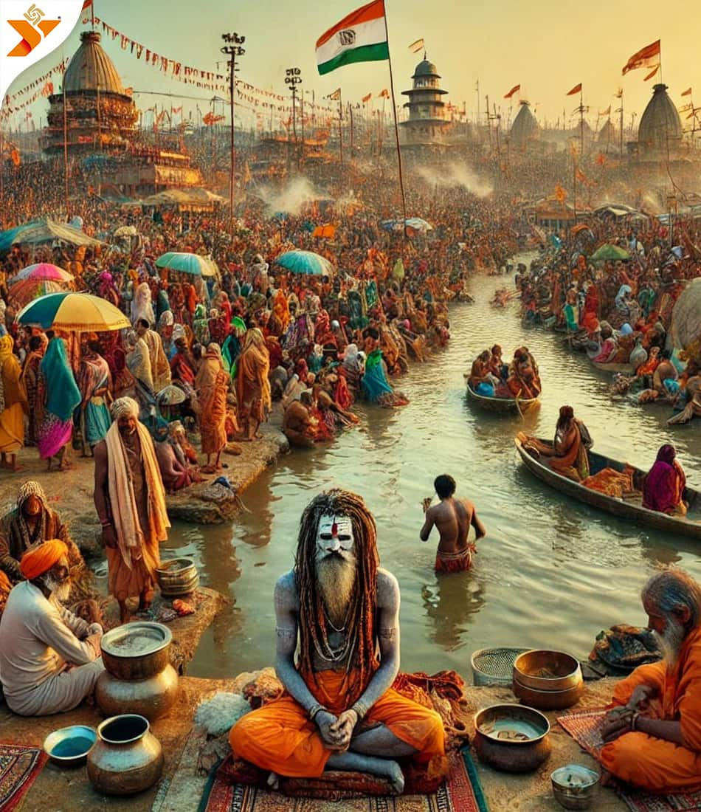

The Land of Temples, Ghats & Heritage

The Taj Mahal in Agra is one of the Seven Wonders of the World and a UNESCO World Heritage Site. Built by Emperor Shah Jahan, it is a symbol of love and architectural brilliance.
Millions of visitors come to admire the white marble mausoleum, intricate carvings, and beautiful gardens every year.

Varanasi, one of the oldest living cities in the world, is famous for its ghats along the Ganga River. The ghats are centers of spiritual rituals, including morning prayers, boat rides, and evening Aarti ceremonies.
The ghats reflect the rich religious and cultural traditions of Uttar Pradesh.

Lucknow, the capital of Uttar Pradesh, is known for its Nawabi culture, historical monuments, and exquisite cuisine. Bada Imambara, Rumi Darwaza, and Chota Imambara are major attractions.
The city is also famous for traditional arts like Chikankari embroidery and classical music.

Kumbh Mela, held in Prayagraj and Haridwar, is one of the largest religious gatherings in the world. Devotees come to bathe in sacred rivers seeking spiritual purification.
The festival represents faith, devotion, and unity among millions of people.
Uttar Pradesh is rich in classical music, dance, traditional theatre, temple architecture, and vibrant festivals. It is home to diverse cuisines, folk arts, and spiritual centers.
From Mughlai cuisine to religious rituals at ghats and temples, Uttar Pradesh’s culture reflects history, devotion, and artistic brilliance.